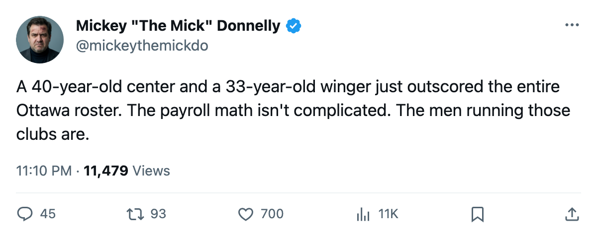
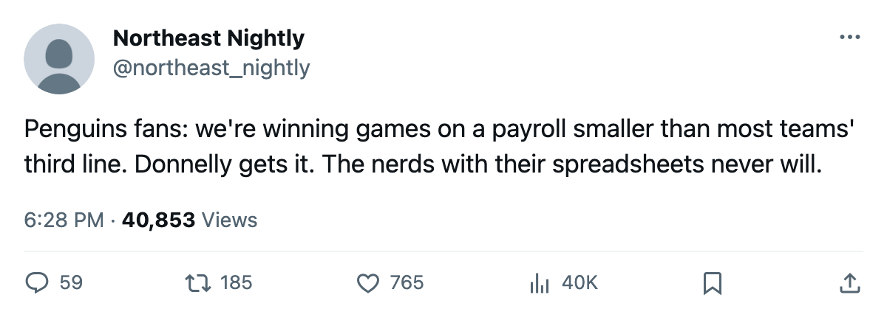

$48.92M, 18 POINTS, AND A 40-YEAR-OLD MAKING THE MATH LOOK STUPID
Pittsburgh has the cheapest points in this league at $2.72M each. Twenty clubs pay more and have less to show for it.
 Mickey "The Mick" DonnellyColumnist, ex-goalie · The Penalty Box
Mickey "The Mick" DonnellyColumnist, ex-goalie · The Penalty Box
 Mario Lemieux85 is 40 years old. He has 17 points in 11 games, 8 goals and 9 assists, at 20.5 minutes a night.
Mario Lemieux85 is 40 years old. He has 17 points in 11 games, 8 goals and 9 assists, at 20.5 minutes a night.  Martin Straka83 is 33 with 21 points in 11 games at 20.1 minutes. Between them they have 38 points on a payroll that wouldn't cover what
Martin Straka83 is 33 with 21 points in 11 games at 20.1 minutes. Between them they have 38 points on a payroll that wouldn't cover what  Washington Capitals pays for one winger.
Washington Capitals pays for one winger.
That is the whole argument. The Bureau has Lemieux at 89. He doesn't have a development ceiling or a projectable future. He has a puck, 20 seasons, and the ability to make a 22-year-old look like he's skating in wet cement.  Pittsburgh Penguins has spent $48.92M and collected 18 points. That's $2.72M per point, the cheapest currency in this league.
Pittsburgh Penguins has spent $48.92M and collected 18 points. That's $2.72M per point, the cheapest currency in this league.
TWENTY CLUBS PAY MORE AND WIN LESS
Pittsburgh's payroll is the 5th lowest in the league. Twenty-four clubs pay more. Twenty of those twenty-four have fewer points than Pittsburgh.
 Ottawa Senators is paying $59.27M for 5 points through 9 games. That's $11.85M per point, the most expensive point in hockey, and they've lost 6 of 9.
Ottawa Senators is paying $59.27M for 5 points through 9 games. That's $11.85M per point, the most expensive point in hockey, and they've lost 6 of 9.  Buffalo Sabres pays $57.39M for 10 points at $5.74M a point. Washington Capitals pays $56.89M for 9 at $6.32M. These aren't rebuilding clubs with lottery picks and a five-year plan. These are clubs that handed out real contracts and got a parking lot nobody fills.
Buffalo Sabres pays $57.39M for 10 points at $5.74M a point. Washington Capitals pays $56.89M for 9 at $6.32M. These aren't rebuilding clubs with lottery picks and a five-year plan. These are clubs that handed out real contracts and got a parking lot nobody fills.
Meanwhile Pittsburgh is 6-1 at home, 3-1 on the road, and riding a 4-game win streak. They score 33 and allow 27 in 11 games. No Pittsburgh Penguins player cracks the top 20 in penalty minutes. They are not the toughest or the most talented club in this league. They are the cheapest points in hockey, and the men making them are old enough to have been playing when some of these general managers were in diapers.
AND THEY FILL THE BUILDING
15,551 bodies at $81 a ticket. $20.87M in profit per game. The Morale Scale has Pittsburgh Penguins at 95.8, fourth in the league. Cheap to build, full at the gate, profitable by Friday, happy in the room. When is the last time a club did all four?
Reimer and his spreadsheet want to talk about shot quality and expected goals and what the model projects. I don't care what the model projects. A 40-year-old center with 17 points and a payroll cheaper than 24 other clubs is telling me everything I need to know about what hockey is supposed to look like.

